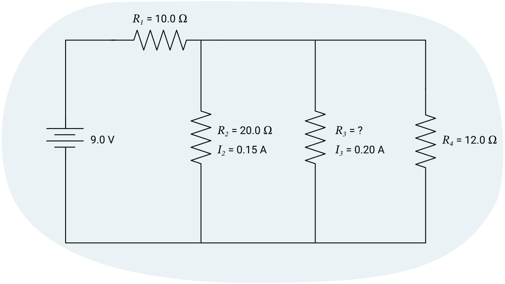

반성하기
새로운 주제를 탐구하고 배울 때, 잠시 멈추고 학습을 되돌아보는 것이 중요합니다. 이를 통해 기존 지식을 강화하고, 오해를 바로잡으며, 앞으로의 학습을 준비할 수 있습니다.
이 학습 활동의 목적은 전기(electricity)에 대해 반성하고, 이 단원 마지막의 과제를 준비하는 것입니다.
노트
이것은 자기 평가(self-assessment)로, 다음에 도움이 될 것입니다:
- 자신의 학습을 평가하고 검토한다
- 학습의 현재 위치, 도달해야 할 목표, 그리고 가장 좋은 방법을 파악한다
- 학습을 준비하고 보여준다
이 자기 평가에는 세 가지 과제가 있습니다. 노트를 사용하여 다음 각 문제를 풀 수 있습니다.
예시 답안과 비교하여 자신의 이해도를 확인하세요.
과제 1: 전기를 이해하기

과제 2: 지식 테스트
이 문제의 풀이를 작성한 후, 제공된 풀이와 답을 확인하세요. 필요할 때만 힌트를 사용하세요!
9.0 V 배터리가 14 Ω의 저항(resistance)을 가진 회로에 연결되어 있습니다. 회로를 통과하는 전류(current)는 얼마입니까?
미지수:
방정식:
풀이:
결론:
회로에 0.64 A의 전류가 흐릅니다.
과제 3: 회로 분석
다음 회로를 살펴보고 다음 질문에 답하세요.

1. 다음 표를 완성하세요.
| 저항 (Ω) | 전류 (A) | 전압 (V) | |
|---|---|---|---|
| 전체 (T) | 15 | 0.60 | 9.0 |
| 저항기 1 | 10.0 | 0.60 | 6.0 |
| 저항기 2 | 20.0 | 0.15 | 3.0 |
| 저항기 3 | 15 | 0.20 | 3.0 |
| 저항기 4 | 12 | 0.25 | 3.0 |
저항기 2에 대해 두 가지 정보를 알고 있으므로, 을 사용하여 전위차(전압)를 계산할 수 있습니다. .
배터리가 제공하는 모든 전압이 회로에서 사용되어야 하므로, 저항기 1의 전압은 입니다. 또한 저항기 2와 병렬인 다른 경로의 전압도 3.0 V임을 알 수 있는데, 각 경로에서 나머지 전압이 모두 사용되어야 하기 때문입니다. 그리고 .
이제 저항기 1에 대해 두 가지 정보(전압과 저항)를 알고 있으므로 전류를 구할 수 있습니다. 이므로, .
저항기 3에 대해 두 가지 정보(전압과 전류)를 알고 있으므로 저항을 구할 수 있습니다. .
저항기 4의 전류를 구하는 방법에는 두 가지가 있습니다. 세 개의 병렬 전류의 합이 전체 전류(0.60 A)와 같아야 한다는 사실을 적용하거나, 알고 있는 두 가지 정보에 를 사용할 수 있습니다. 어느 방법을 사용하든, 입니다.
마지막으로 전체 전류와 저항이 남았습니다. 전류는 첫 번째 직렬 저항기와 같아야 하므로, 입니다. 그러면, 이므로 .
2. 표가 완성되면, 회로의 전력(power)을 구하세요.
주어진 값:
미지수:
방정식:
선택할 수 있는 공식이 여러 개 있지만, 이 예시 답안에서는 를 선택하겠습니다.
풀이:
결론:
회로의 전력은 5.4 W입니다.

노트
반성
과제를 완료한 후, 다음 반성 질문을 스스로에게 물어보세요. 노트에 답을 적으세요.
- 연습 문제의 예시 답안을 검토한 후, 어떤 개념을 더 향상시켜야 합니까?
- 연습 문제의 예시 답안을 검토한 후, 어떤 개념을 잘 했습니까?
- 모든 개념을 이해하기 위한 다음 단계는 무엇입니까?
- 지금까지의 학습 활동에서 학습자로서 한 일을 되돌아보세요. 두세 문장으로 잘한 점을 설명하세요.
- 독립적인 학습자로서의 강점은 무엇입니까? 집중하기 위해 무엇을 했습니까? 도움을 위해 어떤 자료를 활용했습니까?
- 어떤 부분을 개선해야 합니까? 더 나은 학습자/학생이 되기 위해 어떤 조치를 취할 수 있습니까?
자기 점검 퀴즈
이해도를 확인하세요!
다음 자기 점검 퀴즈를 완료하여 학습의 현재 위치와 집중해야 할 영역을 파악하세요.
이 퀴즈는 피드백 목적이며, 성적에 포함되지 않습니다. 이 퀴즈에 대한 시도 횟수는 무제한입니다. 충분한 시간을 갖고 최선을 다하며, 제공된 피드백을 반성하세요.
퀴즈를 눌러 이 도구에 접근하세요.